Welcome to the 「VSArrange」AddIn
概要
VisualStudioプロジェクトフォルダ下にある要素を整理します。
具体的には以下の処理を行います。
- プロジェクト未登録のファイル、フォルダをプロジェクトに追加
- （ただし、追加したくないものは除外）
- プロジェクトに登録されているが、削除されるなどして存在していないファイル、フォルダを
プロジェクトからアンロード
お知らせ
- 2009/02/22 Koropokkur.NET 0.1.2をリリースしました。ダウンロード
- 2009/02/03 Koropokkur.NET 0.1.1をリリースしました。
(Koropokkur.NETはこのアドインが含まれるアドイン集です）
アドイン登録方法
アドインの登録方法はこちらをご覧下さい。使い方
１．プロジェクト、またはソリューションのアイコン上で右クリックメニューを表示させます。
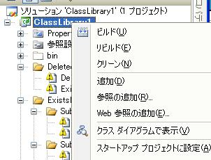
２．メニューの下の方にある「プロジェクト要素の整理」を選択します。
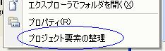
３．削除ファイルはプロジェクトから除外、未登録ファイルは追加されます。
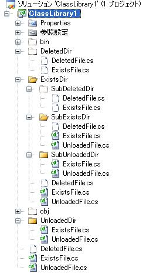
プロジェクト除外条件の設定方法
１．VisualStudioの「ツール」メニューから「Koropokkurの設定」→「VSArrange」を選択します。
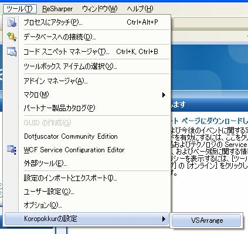２a．プロジェクトに追加したくないファイル名、フォルダ名を設定します（正規表現も使えます）。
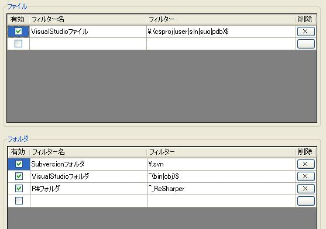２b．除外条件は残しておきたいが適用はしたくない場合は「有効」チェックボックスをOFFにします。
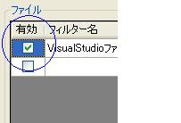２c．除外条件を削除したい場合は「×」ボタンを押します。
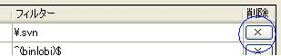２d. 「再読込み」ボタンを押すと設定ファイルを再度読み込み、編集前の状態に戻します。
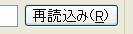３a. フィルター入力欄の下にあるテキストボックスに任意の文字列を入力し、
Return(Enter)キーを押すと現在編集中のフィルター条件に
入力した文字列が引っかかるか確認することができます。
３b. 入力した文字列がフィルターに引っかかるとき、「OK」と表示されます。
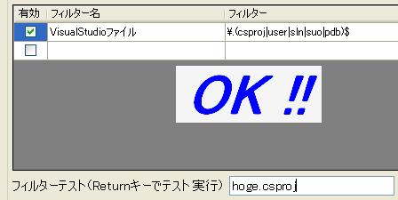３c. 入力した文字列がフィルターに引っかからないとき、「NG」と表示されます。
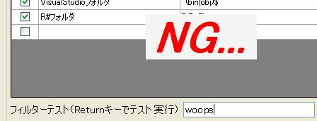４a．「保存して終了」ボタンを押すと変更した設定で保存し、設定画面が閉じられます。
４b．「保存せずに終了」ボタンを押すと変更した内容を破棄して設定画面が閉じられます。
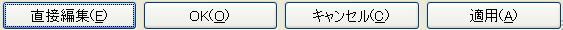５．「使い方」に記載した手順で「（全）プロジェクト要素の整理」を選ぶと
設定した除外条件に従ってプロジェクト要素の整理が行われます。